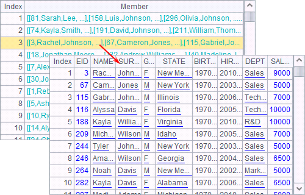
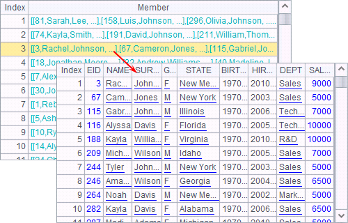
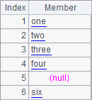
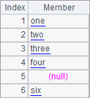
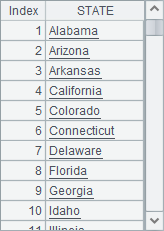
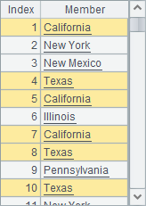

3.4.1 Alignment operation
Usually sort function is used to sort data in a sequence or a table sequence, with a result listed either in ascending order or in descending order. To sort data in a specified order, esProc provides the align function. For example:
|
|
A |
B |
|
1 |
[three,one,four,six,two] |
[one,two,three,four,five,six] |
|
2 |
=A1.sort() |
=A1.align(B1) |
|
3 |
=demo.query("select EID,NAME,GENDER, STATE,DEPT from EMPLOYEE") |
[California,Texas,Florida,Illinois] |
|
4 |
=A3.align(B3,STATE) |
|
The sequence in A1 is composed of string members, and B1 provides a sequence used as the standard for alignment:
 

Both A2 and B2 re-sort members of the sequence in A1. A2 uses the common sort function, while B2 uses the align function to sort the sequence according to B1¡¯s sequence. Results of A2 and B2 are as follows:
 

The sort function only sorts the members alphabetically in ascending or descending order, while align function sorts them according to the positions of members of the standard sequence. If a member in the standard sequence can¡¯t find a matching member in the target sequence, the value in the corresponding position will be a null.
The most cases in which the align function is applied are sorting records of a table sequence or a record sequence. For example, A3 selects records of some employees, and A4 gets the records of certain states from them in the specified order. A3¡¯s result is as follows:

According to the order of the sequence in B3, A4 finds records of the employees in these certain states:

The alignment operation finds the record of the first employee in each of these states and returns a record sequence composed of these records.